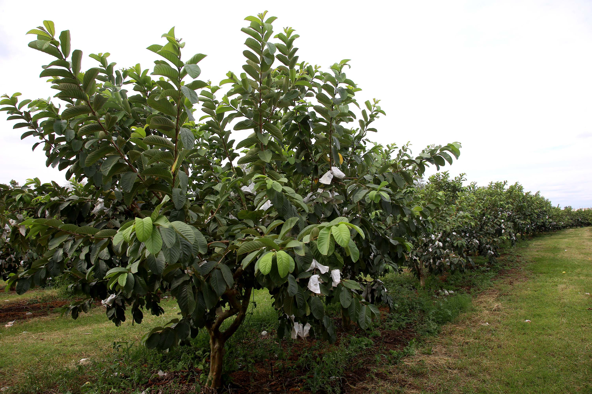

Carlópolis é um munícipio do norte do Paraná com aproximadamente 17 mil habitantes. Ao observar a economia municipal, nota-se com amplo destaque a atividade de cultivo da goiaba, que rendeu a Carlópolis em 2023, o reconhecimento de Capital Nacional da Goiaba de Mesa.